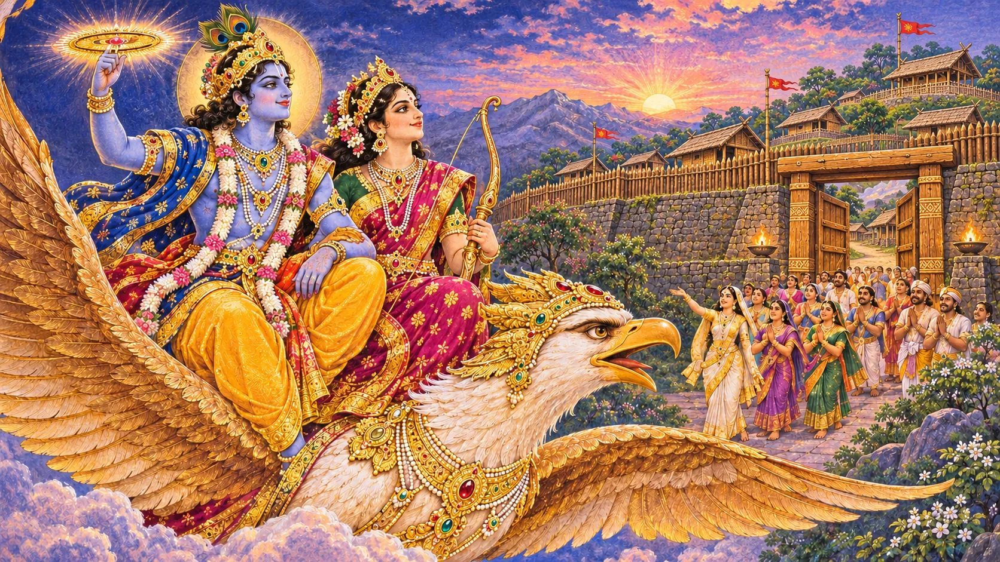
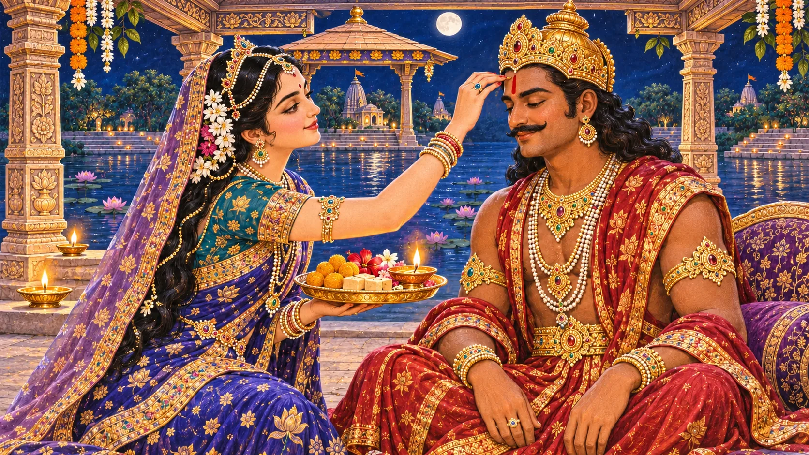
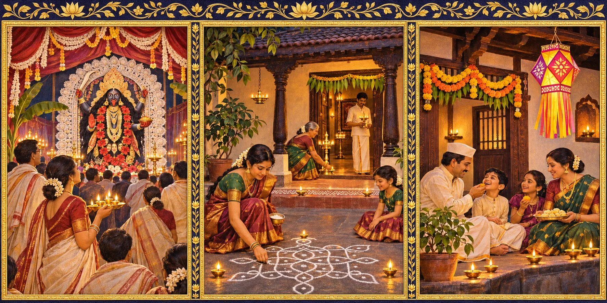

आरोग्य से आरंभ होकर स्नेह तक पहुँचने वाला यह पर्व-काल अनेक कथाओं और क्षेत्रीय परंपराओं को साथ लाता है।
दीपावली कब है?
रविवार, 8 नवंबर 2026
अमावस्या
अपने शहर में पूजा का समय
पूजा का मुहूर्त आपके नगर के सूर्यास्त और पारिवारिक परंपरा के अनुसार देखें। नीचे पंचांग खोलें, अपना शहर चुनें और वर्ष 2026 की पुष्टि करें।
अपने शहर का पंचांग देखें ↗ऊपर दी गई तिथि दृक पंचांग की नई दिल्ली सूची का संदर्भ है। स्थानीय तिथि और मुहूर्त अलग हो सकते हैं।
तिथियाँ अलग क्यों हो सकती हैं?
त्योहार चंद्रतिथि और पूजा के लिए निर्धारित समय पर निर्भर करते हैं। सूर्योदय, सूर्यास्त और क्षेत्रीय परंपरा के कारण विदेश में किसी पर्व का दिन भारत से अलग हो सकता है। अपने शहर और परंपरा का पंचांग देखें।
दीपावली का पर्व-क्रम





यह चंद्रतिथियों पर आधारित पारंपरिक क्रम है। हर क्षेत्र में सभी पर्व लगातार पाँच कैलेंडर दिनों में नहीं पड़ते। अभ्यंग स्नान, मंदिर के अन्नकूट और अन्य स्थानीय आयोजनों का समय अलग से देखें।
धनतेरस — आरोग्य और समृद्धि
धनतेरस पर घर की स्वच्छता, दीप और मंगलकामना से उत्सव आरम्भ होता है। इस दिन भगवान धन्वन्तरि की स्मृति स्वास्थ्य और आयुर्वेद से जुड़ती है; लक्ष्मी पूजा हमें समृद्धि के साथ सदुपयोग का भी स्मरण कराती है। धातु का बर्तन खरीदना एक प्रचलित परम्परा है, अनिवार्य नियम नहीं।
समुद्र मंथन, धन्वन्तरि और यमदीप की कथा के लिए हमारा विस्तृत धनतेरस मार्गदर्शक पढ़ें।
हर परिवार की दीपावली समान क्रम से शुरू नहीं होती। कुछ समुदाय गोवत्स द्वादशी या वसुबारस से उत्सव आरंभ करते हैं। धनतेरस की खरीदारी को श्रद्धा की परीक्षा न बनाएँ; घर का उपयोगी पात्र और साझा भोजन भी पर्याप्त हैं।
नरक चतुर्दशी — नरकासुर का अंत
लोकप्रचलित कथाओं में नरकासुर के अत्याचारों का अंत श्रीकृष्ण करते हैं। कुछ परम्पराओं में सत्यभामा की भूमिका विशेष महत्त्व रखती है। यह कथा अन्याय से मुक्ति और मानवीय गरिमा की रक्षा का संदेश देती है।
कई घरों में प्रातः तेल लगाकर अभ्यंग स्नान किया जाता है। दक्षिण भारत की कुछ परम्पराओं में यही दीपावली का मुख्य उत्सव है। काली चौदस की अपनी अलग क्षेत्रीय रीति भी है।
भागवत पुराण 10.59 में कृष्ण सत्यभामा के साथ गरुड़ पर जाते हैं और नरकासुर का वध करते हैं। सत्यभामा द्वारा अंतिम प्रहार वाली कथा कुछ क्षेत्रीय रूपांतरों में कही जाती है; दोनों को एक ही पाठ का विवरण न समझें। ग्रंथ-संदर्भ।
अभ्यंग स्नान की अपनी समय-परंपरा है, जिसमें प्रायः सूर्योदय से पहले स्नान किया जाता है। अपने शहर और परिवार की रीति के अनुसार दिन और समय देखें; केवल त्योहार की सामान्य तिथि से स्नान का मुहूर्त तय नहीं होता।
अयोध्या में श्रीराम का स्वागत
रामायण से जुड़ी दीपावली की परम्परा में वनवास और रावण-वध के बाद श्रीराम, सीता और लक्ष्मण का अयोध्या लौटना स्मरण किया जाता है। दीपों से जगमगाता नगर घर-वापसी, धर्म और आशा का प्रतीक बनता है।
यह दीपावली से जुड़ी अनेक परम्पराओं में से एक है। भारत के विभिन्न क्षेत्रों में इस पर्व की कथाएँ और रीति-रिवाज भिन्न हैं।
अयोध्या की दीपमालिका त्योहार की जीवित परंपरा का चित्र है। इसे वाल्मीकि रामायण के किसी अप्रमाणित श्लोक का उद्धरण न मानें। वनवास, युद्ध और लौटने की व्यापक कथा के लिए हमारी रामायण गाइड पढ़ें।
लक्ष्मी-गणेश पूजा — कृतज्ञता का दीप
दीपावली की संध्या में घर की सफाई, रंगोली, दीपदान और लक्ष्मी-गणेश पूजा का विशेष स्थान है। लक्ष्मी जी मंगलमय समृद्धि और गणेश जी विवेक व शुभारम्भ का स्मरण कराते हैं। कई व्यापारी समुदाय बहीखातों का पूजन करते हैं।
बंगाल में इसी समय काली पूजा का विशेष महत्त्व है। जैन, सिख और अन्य समुदायों की भी इस पर्व-काल से जुड़ी विशिष्ट ऐतिहासिक और धार्मिक स्मृतियाँ हैं।
पूजा में संकल्प का अर्थ अपने आचरण की दिशा तय करना भी हो सकता है: ईमानदार आजीविका, सोच-समझकर खर्च और समय पर सहायता। दीपों की सजावट के बाद परिवार थोड़ी देर शांत बैठकर वर्ष के लिए अपनी कृतज्ञता बाँट सकता है।
गोवर्धन पूजा — प्रकृति की रक्षा
भागवत पुराण की कथा में श्रीकृष्ण व्रजवासियों को गोवर्धन पर्वत, गौवंश और जीवनदायी प्रकृति के प्रति कृतज्ञ होना सिखाते हैं। इन्द्र के प्रचण्ड वर्षा करने पर कृष्ण गोवर्धन उठाकर सबको आश्रय देते हैं।
कई परिवार और मंदिर गोवर्धन का प्रतीक बनाकर फूलों से सजाते और पूजा करते हैं। कथा विनम्रता तथा प्रकृति के प्रति जिम्मेदारी का संदेश देती है।
कथा: भागवत 10.24 और 10.25। गोवर्धन पूजा का दिन स्थानीय तिथि-नियम से देखें। सार्वजनिक अन्नकूट किसी सुविधाजनक दिन रखा जा सकता है; मंदिर जाने से पहले उसका कार्यक्रम देखें।
अन्नकूट — भोजन बने प्रसाद

अन्नकूट का अर्थ है अन्न का पर्वत। मंदिरों और घरों में अनेक शाकाहारी व्यंजन सजाकर भगवान को अर्पित किए जाते हैं, फिर प्रसाद बाँटा जाता है। यह गोवर्धन पूजा से निकटता से जुड़ा है, पर हर समुदाय की विधि और आयोजन का दिन समान नहीं होता।
विशाल थालों की नकल करना आवश्यक नहीं। चावल, दाल, मौसमी सब्जी और थोड़ी मिठाई के साथ भी घर में कृतज्ञता व्यक्त की जा सकती है। भोजन व्यर्थ न जाए; बाँटने से पहले एलर्जी और आहार की जरूरतें पूछें। सेवा करने वाले हाथों और भोजन उगाने वालों का भी सम्मान करें।
बलि प्रतिपदा — दान, वचन और नवआरंभ

राजा बलि के यज्ञ में विष्णु वामन रूप में तीन पग भूमि माँगते हैं। बलि वचन देते हैं; वामन विराट होकर पृथ्वी और आकाश नाप लेते हैं। तीसरे पग के लिए बलि अपना सिर प्रस्तुत करते हैं। भागवत में बलि को केवल खलनायक नहीं, वचन निभाने वाले भक्त के रूप में भी देखा गया है।
बलि को सुतल का निवास और भगवान का संरक्षण मिलता है। भागवत 8.22 इस भक्ति-पक्ष का स्रोत है। कुछ क्षेत्रीय परंपराएँ इस दिन प्रिय राजा की वापसी स्मरण करती हैं। महाराष्ट्र में दिवाली पाडवा दांपत्य सम्मान से भी जुड़ा है; कर्नाटक में बलिपाड्यमी का अपना स्वरूप है। केरल का ओणम भी महाबलि से जुड़ा है, पर वह अलग ऋतु का अलग पर्व है।
बलि प्रतिपदा और गुजराती नववर्ष के लिए अपने समुदाय का क्षेत्रीय पंचांग देखें। हर स्थान पर इनकी तिथि गोवर्धन पूजा की सूची के समान हो, यह आवश्यक नहीं है।
एक पर्व-काल, अनेक परंपराएँ

उत्तर भारत में राम का स्वागत, लक्ष्मी-गणेश पूजा और घर की दीपमालाएँ प्रमुख हैं। तमिल और तेलुगु परिवारों सहित दक्षिण की अनेक परंपराओं में नरक चतुर्दशी का प्रातः स्नान, नए वस्त्र और विशेष भोजन केंद्र में रहते हैं। किसी एक प्रांत की विधि को सबकी अनिवार्य विधि न समझें।
बंगाल तथा पूर्वी भारत के कुछ भागों में काली पूजा का विशेष महत्त्व है। गुजरात में बहीखाता पूजन और नए वर्ष का स्वागत प्रमुख है; महाराष्ट्र में वसुबारस, धनत्रयोदशी, पाडवा और भाऊबीज परिवार की स्मृतियों को जोड़ते हैं। रीति, भोजन और नाम समुदाय के भीतर भी बदल सकते हैं।
जैन समुदाय महावीर के निर्वाण का स्मरण करते हैं; सिख बंदी छोड़ दिवस में गुरु हरगोबिंद की मुक्ति को याद करते हैं। नेपाल की तिहार और नेवार समुदायों की स्वन्ति परंपराओं की अपनी पहचान है। ये साथ पड़ने वाले उत्सव हैं, एक ही कथा के दूसरे नाम नहीं। प्रिंसटन का परिचय पढ़ें।
भाई दूज — स्नेह और मंगलकामना
भाई दूज, यम द्वितीया या भाऊबीज भाई-बहन के प्रेम और एक-दूसरे की कुशलता की कामना का पर्व है। एक कथा में यमुना अपने भाई यम का स्वागत करती हैं और उन्हें तिलक लगाती हैं।
तिलक के लिए स्थानीय द्वितीया तिथि और अपनी परंपरा का अपराह्न काल देखें। अलग देशों में रहने वाले भाई-बहन दोनों घरों की परंपरा का सम्मान करते हुए बातचीत और शुभकामना का समय तय कर सकते हैं।
दूर रहने वाले भाई-बहन वीडियो कॉल पर शुभकामना दे सकते हैं और मिलने का समय तय कर सकते हैं। परंपरागत तिलक में बहन भाई की कुशलता चाहती है; आज उसके साथ पारस्परिक सम्मान और दोनों की देखभाल का संकल्प जोड़ना भी सार्थक है।
घर पर सरल, सार्थक उत्सव
एक स्वच्छ पूजा-स्थान, थोड़ी रंगोली, सुरक्षित दीप या LED प्रकाश, फूल और घर का बना प्रसाद पर्याप्त हैं। बच्चों को हर दिन की कथा सुनाएँ, पड़ोसियों के साथ मिठाई बाँटें और दूर रहने वाले परिवार से बात करें।
दीपावली का अर्थ दिखावा या अधिक खर्च नहीं है। एक छोटा दीप भी श्रद्धा, करुणा और जिम्मेदारी का बड़ा संदेश दे सकता है।
घर में दीपावली: सरल पूजा क्रम

- स्वच्छ, सुरक्षित पूजा-स्थान बनाएँ और फूल या रंगोली सजाएँ।
- स्नान कर स्वच्छ वस्त्र पहनें और परिवार की परंपरा के अनुसार गणेश व लक्ष्मी का स्मरण करें।
- दीप जलाएँ, जल, पुष्प, फल या घर का बना नैवेद्य अर्पित करें।
- परिचित मंत्र या आरती पढ़ें; कठिन संस्कृत बोलना अनिवार्य न मानें।
- कृतज्ञता और सबके कल्याण की प्रार्थना करें, फिर प्रसाद बाँटें।
यह घर के लिए एक सुझाव है, सभी संप्रदायों का अनिवार्य विधान नहीं। आरती संग्रह भी देखें। खुली लौ को अकेला न छोड़ें; अनुमति न हो तो LED दीपक चुनें।
स्रोत और तिथि-जाँच
संदर्भ तिथियाँ 5 नवंबर 2026 को दृक पंचांग की नई दिल्ली सूची से पुनः जाँची गईं। स्थानीय तिथि और मुहूर्त के लिए अपना शहर चुनें। ग्रंथ की कथा और घरेलू लोककथा को अलग-अलग पहचाना गया है।
- Drik Panchang — Dhanteras, New Delhi reference, 2026
- Drik Panchang — Lakshmi Puja, New Delhi reference, 2026
- Drik Panchang — Bhai Dooj, New Delhi reference, 2026
- Bhagavata Purana 8.8 — Dhanvantari and Lakshmi
- Panchang Guru — King Hima household folklore
- Bhagavata Purana 10.59 — Naraka
- Bhagavata Purana 10.24 — Govardhan worship
- Bhagavata Purana 10.25 — shelter beneath Govardhan
- Bhagavata Purana 8.22 — Bali
- Princeton Hindu Life — Diwali traditions
- NALIS — Divali and its traditions